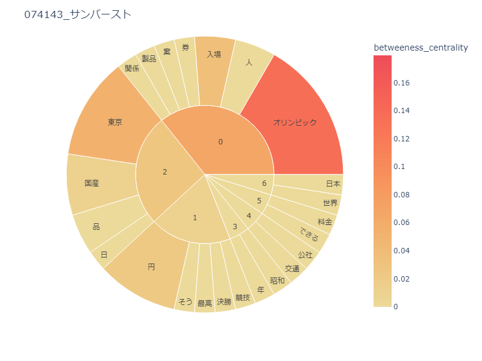
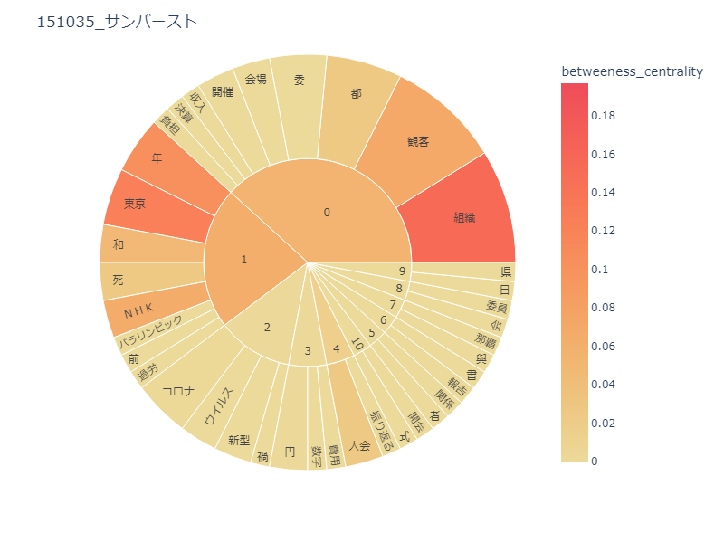

データマイニング


やり方
まずWebClassのログインページを開き、ログインして、 課題のある授業には
「締め切りが近い課題があります。」という表示があるのでそれを目印に課題を記録していく。
ソースコード
結果
WebClassのログインページは開くことができました。
しかし、そこから画像を認識してクリックしてくれるコードを使ってログインするように書いたつもりだったが、
画像がうまく認識されなかったため、次に進めませんでした。
その他にWebスクレイピングという方法を調べたが、ログインする必要がありました。
参考文献